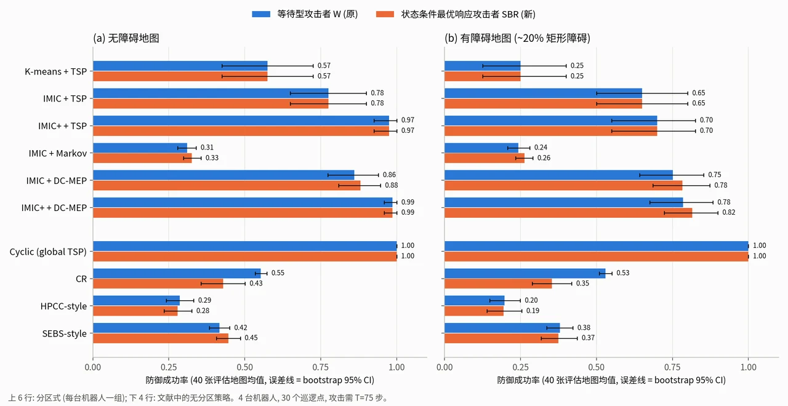
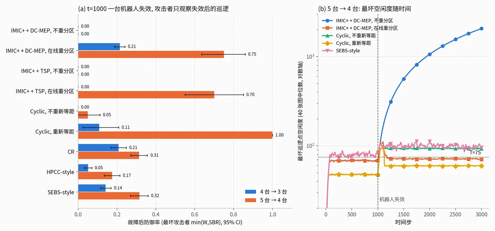
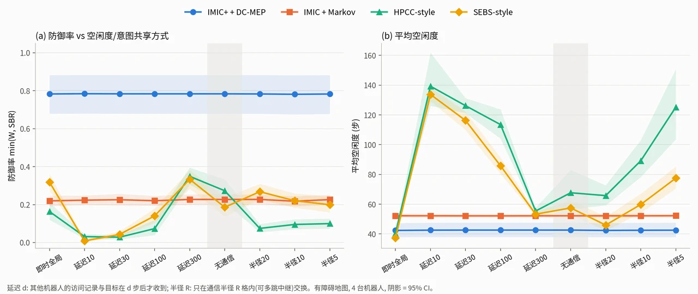
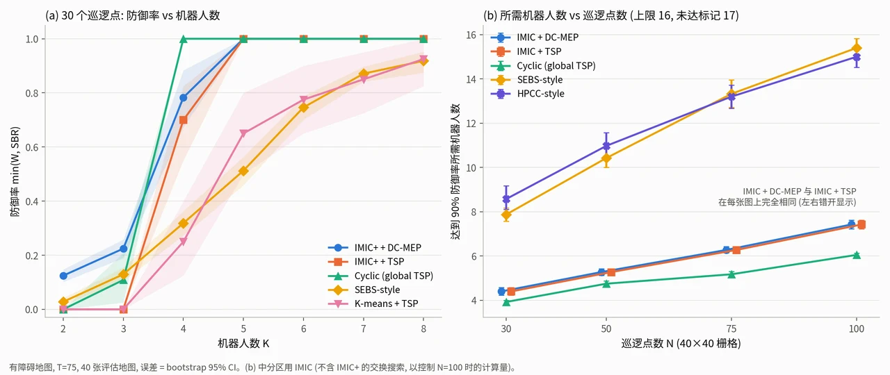

多机器人协同巡逻
几台机器人分片巡逻一片区域，对手会先观察、再挑最久没人去的点下手。本科毕设里我做了两件事：把区域分得更均衡，让巡逻路线更难预测。2026 年我按原思路重写了仿真，改进了随机巡逻规则，又拿文献里的方法、会学习的攻击者、机器人故障和通信延迟把它全面测了一遍。
- 问题
- 多机器人巡逻：分区不均导致有的点太久没人去；固定路线容易被摸清规律
- 我做的
- IMIC 均衡分区、截止期约束的随机巡逻（DC-MEP）及其安全性证明；文献基线、自适应攻击者、故障与通信实验
- 技术栈
- Python · A* · TSP · 马尔可夫链 · 蒙特卡洛评估 · bootstrap 置信区间
- 评估
- 40 张评估地图 + 10 张单独调参地图，有无障碍两种环境，两种攻击者取更强者
- 结果
- 有障碍环境下防御率从基线 25% 提到 78%，明显好于文献中的 CR、SEBS 等方法，且完全不依赖通信。但在这个设定下，最简单的全局循环巡逻能做到 100%，页面如实给出。
- 说明
- 原代码和论文已遗失，现版本按毕设方法重写；文献方法是按论文思路的简化实现。
场景与攻击者
40×40 栅格上有 30 个巡逻点，一半地图带约 20% 的矩形障碍，机器人之间的距离和路线都用 A* 计算。默认 4 台机器人。
攻击要持续 T = 75 步，期间只要有机器人回到该点就算防御成功。我用了两种攻击者，结果取两者中更强的那个：
- 等待型。先旁观一段时间，找出最容易得手的点；之后每当机器人离开这个点就开始攻击。
- 自适应型（SBR，状态条件最优响应）。能看到所有机器人的位置，从观察到的轨迹里统计“在什么状态下动手成功率最高”，只在那种状态下出手。参数在单独的调参地图上选，攻击者观察和最终评估用的是不同时间段的数据。
- 分区把 30 个点分给几台机器人
- 巡逻每台在自己的组里决定下一站
- 评估攻击者观察后挑最弱的点和时机
均衡分区
K-means 只看点的远近，分出来的组工作量差很多：有的组绕一圈要 90 步，有的只要 26 步。攻击者只需要盯住最长那组。
IMIC（改进的最小增量聚类）用最远点做种子，再把每个点分给“当前工作量 + 插入增量”最小的组，工作量就是组内 TSP 回路（经过组内每个点一次再回到起点的最短路线）的长度。分完再从最重的组往外迁点。重写时我加了多组种子重启，以及组间换点（IMIC+）。

随机巡逻的陷阱
毕设里，每台机器人在组内按马尔可夫链随机选下一站，越久没去、越近的点概率越大。路线确实难猜了，衡量“下一站有多难猜”的路径熵从 TSP 的 0 升到约 2.5 bit。
但重写后的评估发现，这样做防御率反而更低：有障碍环境下只有 22%，比固定路线差很多。原因是随机游走的回访间隔有长尾，总有某个点偶尔很久才被访问一次；攻击者不需要猜路线，只要等这个长尾出现。
截止期约束的随机巡逻
我的改进叫 DC-MEP（Deadline-Constrained Max-Entropy Patrol，截止期约束的最大熵巡逻）：随机，但只在“安全”的选项里随机。机器人每到一个点，先列出下一站的候选，只保留去了之后仍然来得及把组内所有点在 T 步内都访问到的那些（判断方法：去完之后，从某个点出发、沿组内 TSP 回路走一圈，能否让每个点的空闲时间都不超过 T），再在其中均匀随机选。
安全性可以证明：只要组的回路长度不超过 T，任何时刻上一步计划的剩余部分本身就是一个安全候选，所以候选集永远非空；归纳下去，每条样本路径上都没有点空闲超过 T 步，任何攻击者在这个组里都会失败。这个保证不依赖通信，因为每个组只有一台机器人，它自己的到访记录就够了。回路长于 T 时，没有任何策略能保证，DC-MEP 退化为按距离加权的随机游走。
两部分是互补的：均衡分区让更多组的回路短于 T，DC-MEP 在这些组里“免费”换来不可预测性。
和文献方法对比
我按论文思路实现了四种经典的多机器人巡逻策略，和自己的方案放在同一套地图、攻击者和评估协议下比较。“空闲度”指一个巡逻点距上次有机器人到访过了多少步；“邻点”指每个巡逻点按 A* 距离最近的 4 个点。
| 方法 | 怎么选下一站 | 需要的信息 / 通信 |
|---|---|---|
| K-means + TSP（基线） | 按坐标 K-means 分组；组内沿固定的 TSP 回路（经过所有点一次的最短闭合路线）循环走 | 无需通信 |
| IMIC / IMIC+ 分区 | 改进的最小增量聚类：按“组内 TSP 回路长度”均衡工作量分组；IMIC+ 再加多组种子重启和组间换点 | 只在分区时需要 |
| + 马尔可夫（毕设原方案） | 组内随机游走，越久没去、越近的点转移概率越大 | 只用自己的到访记录 |
| + DC-MEP（改进） | Deadline-Constrained Max-Entropy Patrol：只在“去了之后仍能让组内每个点在 T 步内被访问”的候选里均匀随机选 | 只用自己的到访记录 |
| Cyclic （Chevaleyre 2004） | 所有点连成一条全局 TSP 回路，所有机器人同向、等间距地沿它走；故障后可重新等距 | 需要保持间距的协调 |
| CR，Conscientious Reactive （Machado 等 2002） | 去邻点中自己记录里空闲最久的那个 | 完全不通信 |
| HPCC 式，Heuristic Pathfinder Cognitive Coordinated （Almeida 等 2004） | 在全图中选“归一化空闲度 − 0.5 × 归一化距离”最大的点作为目标，跳过其他机器人已选的目标 | 共享空闲度和目标 |
| SEBS 式，State Exchange Bayesian Strategy （Portugal 与 Rocha 2013） | 对每个邻点算“空闲度 ÷ 距离”的增益，用贝叶斯公式得后验概率，其他机器人打算去的点先验调低，取后验最大者 | 共享空闲度和意图 |
HPCC 式和 SEBS 式是按论文思路的简化实现，不是原作者代码。
- K-means + TSP（基线）
- 25%
- IMIC + 马尔可夫（毕设原方案）
- 22%
- CR
- 32%
- SEBS 式
- 32%
- IMIC+ + TSP
- 70%
- IMIC+ + DC-MEP（改进）
- 78%
- Cyclic（全局循环）
- 100%
DC-MEP 比同一分区上的固定 TSP 高 8 个百分点（配对差值 95% 置信区间 +4 到 +13），比 CR、SEBS 式高一倍以上。但 Cyclic 全部防住了：
原因很直接。全局回路长度除以 4 台机器人约为 62 步，所有地图都短于 T = 75；而分区后最长那组的回路平均约 73 步，只有 70% 的地图短于 75。分区天生会损失一点效率，在机器人够用、攻击窗口不太短的时候，这点损失就决定了胜负。
自适应攻击者也没能打穿 DC-MEP（防御率 82%，略高于等待型下的 78%）。它真正打穿的是间隔不均匀的确定性巡逻，比如 CR 从 53% 掉到 35%。


故障与通信
那分区还有什么用？答案在理想条件之外。
| 配置 | 5 台 → 4 台 | 4 台 → 3 台 |
|---|---|---|
| 分区式，不重新分区 | 0% | 0% |
| IMIC+ + TSP，在线重新分区 | 70% | 0% |
| IMIC+ + DC-MEP，在线重新分区 | 75% | 21% |
| Cyclic，不重新等距 | 5% | 0% |
| Cyclic，重新等距 | 100% | 11% |
| CR | 31% | 21% |
| SEBS 式 | 32% | 14% |
- 机器人故障：分区必须在线重分。不重新分区时，失效机器人那组无人巡逻，防御率为 0。在线重新分区后，5 台变 4 台恢复到 75%，与一开始就只有 4 台的 78% 接近；4 台变 3 台时只有 DC-MEP 和 CR 还剩 21%。Cyclic 不重新等距时，自适应攻击者能抓住机器人间隔不均，把它打到 5%。
- 通信：分区策略完全不受影响。加 10 到 300 步的通信延迟、或者只能在 5 到 20 格半径内通信，分区策略的防御率变化都小于 1 个百分点，这正是上面安全性证明的推论。相比之下，依赖共享空闲度的 HPCC 式和 SEBS 式只要 10 步延迟就从 16% / 32% 掉到 3% / 1%，平均空闲度从约 40 步升到约 135 步，比完全不通信还差：几台机器人拿着过时的空闲度，容易做出重复的选择。




规模扩展
| 策略 | 30 点 | 50 点 | 75 点 | 100 点 |
|---|---|---|---|---|
| Cyclic（全局循环） | 3.9 | 4.8 | 5.2 | 6.1 |
| IMIC + DC-MEP | 4.4 | 5.3 | 6.3 | 7.4 |
| IMIC + TSP | 4.4 | 5.3 | 6.3 | 7.4 |
| SEBS 式 | 7.9 | 10.4 | ≥13.3 | ≥15.4 |
| HPCC 式 | ≥8.6 | ≥11.0 | ≥13.2 | ≥15.0 |
DC-MEP 和固定 TSP 在每张图上需要的台数完全一样：随机性本身不省机器人。
DC-MEP 的随机性真正有用的地方，是谁都给不出保证的时候：攻击窗口缩短到 T = 50 时，Cyclic 和 TSP 都是 0，DC-MEP 还有 19%；4 台坏到 3 台时，DC-MEP 加在线重新分区有 21%，TSP 是 0，Cyclic 是 11%；只有 2 到 3 台机器人时也是 DC-MEP 最好。


结论与局限
- 结论。机器人够用、通信可靠时，用全局循环巡逻并在故障时重新等距；通信不可靠、机器人不足、攻击窗口很短时，用均衡分区加 DC-MEP，它有可证明的安全保证，而且不依赖通信。毕设原来的纯马尔可夫随机巡逻在两种情况下都不该用。
- 不是原始代码。毕设的代码和论文已经找不到，IMIC 细节、马尔可夫转移形式和攻击者模型都是按毕设思路重新实现的，数字和当年的不能直接对比。HPCC 式和 SEBS 式是按论文思路的简化实现，不是原作者代码。
- 模型简化。没有机器人之间的碰撞和感知范围，移动是离散栅格步；还没有在 ROS / Gazebo 或实机上验证。